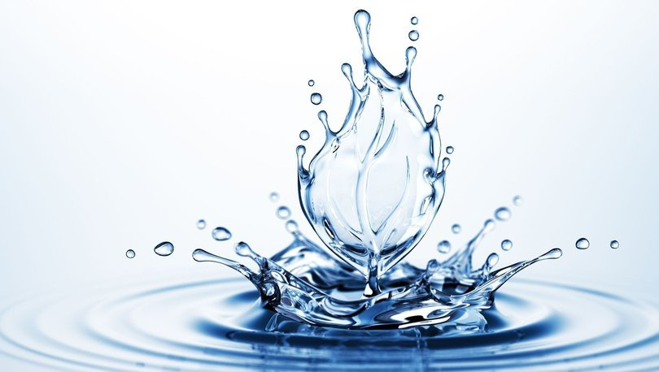

Su, yaşamın temelidir ve vücudumuzun düzgün işleyişi için vazgeçilmez bir unsurdur. İnsan vücudunun büyük bir bölümü sudan oluşur; hücrelerimizden organlarımıza kadar her yerimizde su bulunur ve sayısız hayati fonksiyonun yerine getirilmesinde rol oynar. Bu nedenle, yeterli miktarda su tüketmek, sağlığımızı korumak ve genel yaşam kalitemizi artırmak için hayati öneme sahiptir.
Suyun Vücudumuzdaki Rolü:
-Hücrelerin Temel Bileşeni: Su, hücrelerimizin yapısının büyük bir kısmını oluşturur ve hücre içi süreçlerin gerçekleşmesi için gereklidir.
-Besin ve Oksijen Taşınması: Kan yoluyla besinleri ve oksijeni hücrelere taşırken, atık maddeleri de hücrelerden uzaklaştırır.
-Vücut Sıcaklığının Düzenlenmesi: Terleme yoluyla vücut sıcaklığının dengelenmesine yardımcı olur.
-Eklem Kayganlığı: Eklemlerin düzgün çalışması için eklem sıvısının oluşumunda görev alır.
-Sindirim Sistemi: Besinlerin sindirilmesine ve emilmesine yardımcı olur, kabızlığı önler.
-Böbrek Fonksiyonları: Böbreklerin atık maddeleri süzmesine ve idrar oluşumuna yardımcı olur.
-Cilt Sağlığı: Cildin nemli ve sağlıklı kalmasını sağlar.
| Saat | İçilen Miktar | Not |
|---|---|---|
| 08:00 | 1 bardak | Uyanınca hemen! |
| 12:30 | 1 bardak | Öğle yemeği öncesi |
| 18:00 | 2 bardak | Spor sonrası |